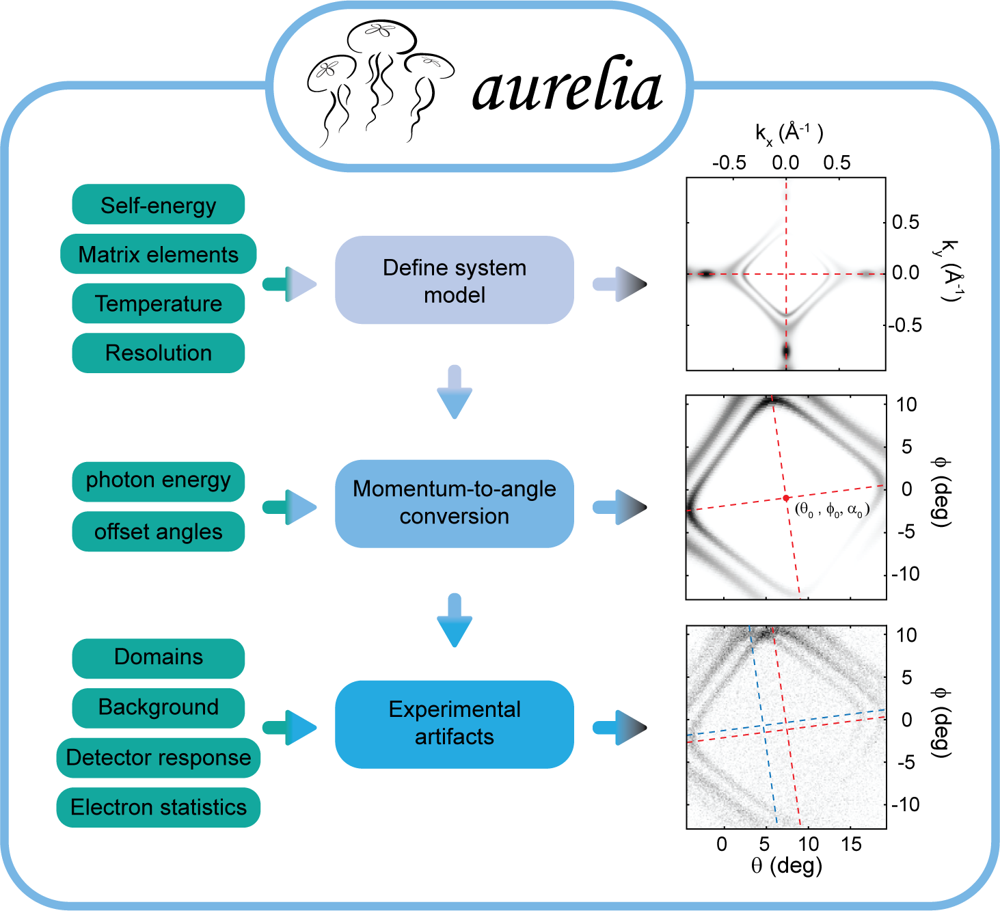

Quickstart
Welcome to aurelia Quick Start! This guide demonstrates how to use the Aurelia package to simulate ARPES spectra, including realistic experimental artifacts. The aurelia workflow is briefly illustrated below:
{kind=link}

Step 1: Import aurelia classes
import numpy as np
import os
from aurelia.aurelia_arpes import Bands, Spec, ARPES
from aurelia.aurelia_static_vars import mod, domain, experiment
from aurelia.aurelia_plots import show_spectra as sh
from aurelia import aurelia_hdf5_saving as sv
Step 2: Define the bands
This defines a tight-binding band structure along a k-path and prints relevant variables for inspection.
# Number of points in theta and phi
B = Bands(Npts=[200, 250])
B.Make_kpath()
B.Make_bands()
B.print_variables()
Step 3: Calculate spectra
This computes the spectral function for the bands and plots the spectrum.
spec = Spec(B, dimension='sliceEk')
spec.Make_matrix_elements()
spec.Make_self_energy(SE={"type": 'FL'}) # Fermi-liquid self-energy
m = mod()
spec.Make_specfun(m)
spec.Make_specmod(m)
spec.print_variables()
sh.Make_spec_plot(spec)
Step 4: Simulate ARPES spectra
This defines the experimental artifacts and converts the spectral function to emitted angles and kinetic energies.
# Define experimental angles
ang_in = {"th": np.deg2rad([-15, 15]),
"ph": np.deg2rad([-10, 10])}
# Define detector properties
det = {"response": 'center',
"sensitivity": np.random.uniform(0.5, 1),
"type": 'HA',
"slit": "horizontal",
"counting mode": "ADC"}
# Define background
bg = {"type": ('flat', 'poly')}
# Create experiment and ARPES objects
exp = experiment(spec, detector=det, bkgd=bg, Ne=10**6)
arpes = ARPES(spec, exp, ang_lim=ang_in)
arpes.Make_angle_conv()
sh.Make_arpes_plot(arpes, exp)
Step 5: Add artifacts and statistics
This adds realistic experimental effects like detector sensitivity and background noise, and applies statistical sampling to simulate electron counts. The final “measured” ARPES spectrum is shown, and relevant variables are plotted.
arpes = exp.Make_bkgd(arpes) # Add background
arpes = exp.Make_detector_responsivity(arpes) # Detector response
arpes.Make_statistics(exp) # Statistical noise
sh.Make_stats_plot(arpes)
arpes.print_variables()